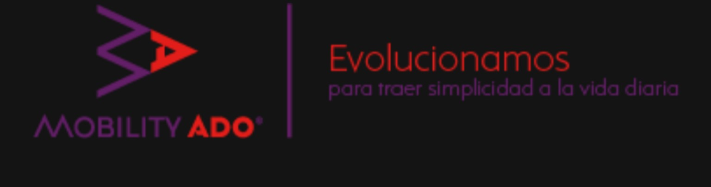

Gerencia Regional de Recaudación VHT
¿Qué deseas conciliar hoy?
Bienvenido a CONCILI.IA OS, tu centro inteligente de trabajo. Selecciona una herramienta para iniciar el proceso.
⇄
⚖
CIA – ERPCO
Conciliación y validación de información entre CIA y ERPCO.
Conciliación operativa↗◎
⟳
JD – ERPCO
Acceso al módulo especializado de conciliación JD contra ERPCO.
Cruce y validación↗▥
$
INGRESOS
Consulta y procesamiento del módulo de conciliación de ingresos.
Control de ingresos↗✦
AI
OTRAS CONCILIACIONES
Acceso al asistente para apoyar otros procesos de conciliación.
Asistente inteligente↗